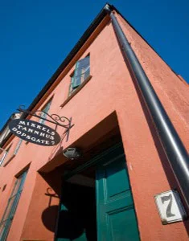
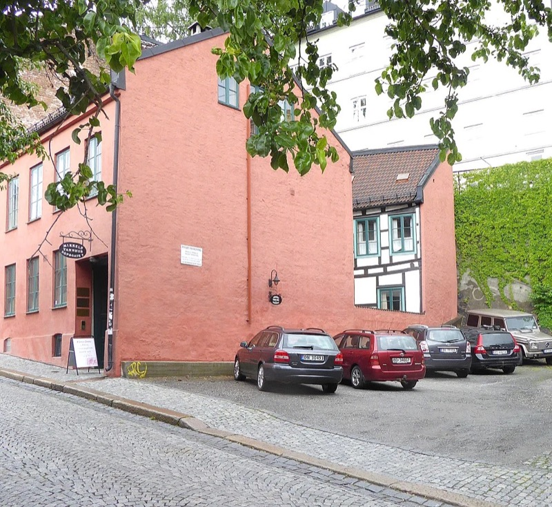

Tannklinikk i Oslo sentrum med over 25 års erfaring.

Mikkels Tannhus er oppkalt etter grunnleggeren, tannlege og spesialist i Periodonti, Mikkel Kardel. Klinikken ble startet i Dopsgate 7 på Fredensborg, og har vært et kjent tannlegekontor i Oslo sentrum i over 25 år. I 2006 overtok hans sønn, tannlege Esben Reimers Kardel, driften av klinikken.
Mikkels Tannhus holder til i historiske omgivelser i Dopsgate 7, på Fredensborg midt i Oslo sentrum. Klinikkens miljø utstråler varme og har et hyggelig personlig preg. Man glemmer fort at man er hos tannlegen når man lener seg tilbake i et venterom inspirert av flott gammel bygningsarkitektur.
Ta kontakt →Vi bygger vår praksis på verdier som gjør en reell forskjell for deg som pasient.
Vi prioriterer kvalitet — både for utseende og holdbarhet — i alt vi gjør.
XO Flow tannlegeunit, Leica mikroskop og intraoral skanner for presis behandling.
Vi benytter kun norske tannteknikere med lang garanti på alt arbeid.
Hyggelig klinikk med personlig preg i historiske omgivelser.
 XO Flow tannlegeunit
XO Flow tannlegeunit

Gratis parkeringAlt du trenger å vite før timen din.
2 topp moderne behandlingsrom med Leica mikroskop, intraoral skanner og prisvinnende XO Flow tannlegeunit.
Gratis parkering rett utenfor inngangen i Dopsgate 7.
Dopsgate 7, 0177 Oslo. På Fredensborg, midt i Oslo sentrum.
Art Pro Dental Design · Straumann Implantater · Proteket · XO Care · 3Shape